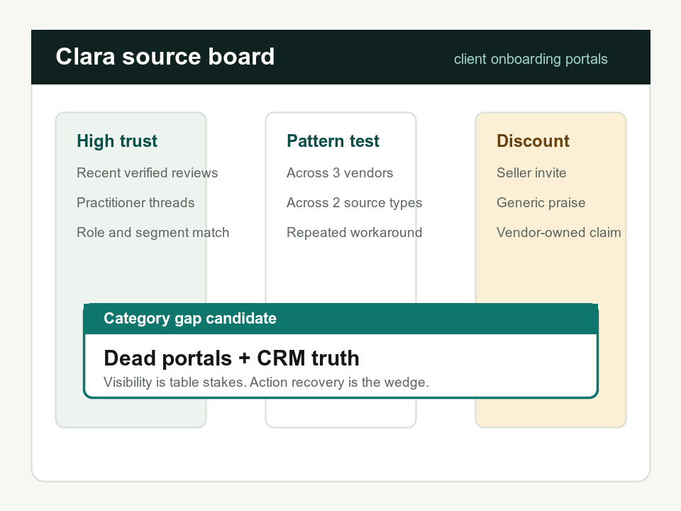

Summarize GUIDEcx reviews for me. Is there an opportunity here?
Competitive intelligence for ops tooling
Find the white space hiding between competitor reviews.
Clara interrogates your wedge, weighs noisy public reviews, and surfaces complaints that repeat across vendors.
1Category
2Segment
3Competitors
4Wedge
Not star ratings.
Repeated complaints.
Not one vendor.
Category triangulation.
Not generic summaries.
Wedge-backed maps.
The method
Clara refuses the shallow read.
One vendor review page is usually a mirror of that vendor's roadmap and review campaign. Clara starts by making the research angle explicit.
Interrogate the wedge
Category, buyer segment, competitor set, prior belief, and decision all get named before source work begins.
Discount the source
Recent verified reviewers, practitioner threads, incentives, seller invites, and segment fit are weighed separately.
Map the repeated pain
Vendor-specific misses get separated from complaints that repeat across the whole category.
Chatbot demo
A Clara conversation, tuned for white-space discovery.
Use the controls to switch between the angle gate, source-health pass, and final wedge recommendation.
Angle gate
Clara asks what you are really trying to prove.
User Summarize GUIDEcx reviews.
Clara One vendor mostly reveals that vendor's roadmap and reviewer mix. Which category, segment, competitor set, wedge, belief, and decision should I test?
Minimum viable angle
Category + segment + competitors + decision
Source weighting
Every source gets a credibility job.
The point is not to collect more snippets. The point is to know which snippets deserve trust.

Verified, recent reviews
High signal when the reviewer role, company size, date, and source label match the target segment.
Practitioner threads
Weighted up when operators describe the actual workflow, workarounds, and buying tradeoffs.
Vendor-owned claims
Useful for positioning, product direction, and claimed capabilities. Weak evidence for buyer pain.
Worked example
Client onboarding portals: visibility is table stakes.
Clara compared Rocketlane, GUIDEcx, and Dock for mid-market B2B implementation teams. The opening was not another shared portal.
01
The dead-portal gap
The portal exists, but the customer still does not reliably act. The wedge is customer-action recovery.
02
The CRM truth gap
Implementation detail lives in the onboarding tool, while CRM and CS systems still need manual updates.
03
The process-maturity gap
Teams with messy onboarding motions need help shaping the first plan, not only managing a finished one.
Portable ICM folder
Drop Clara into a Claude project and ask for a category read.
Use the included rules, source map, worked transcript, and white-space map as the live demo.